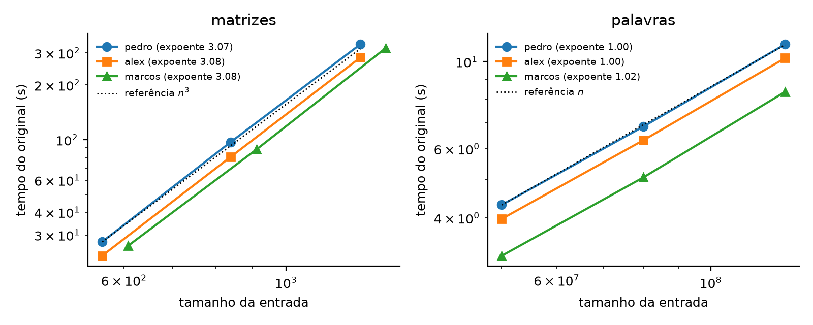
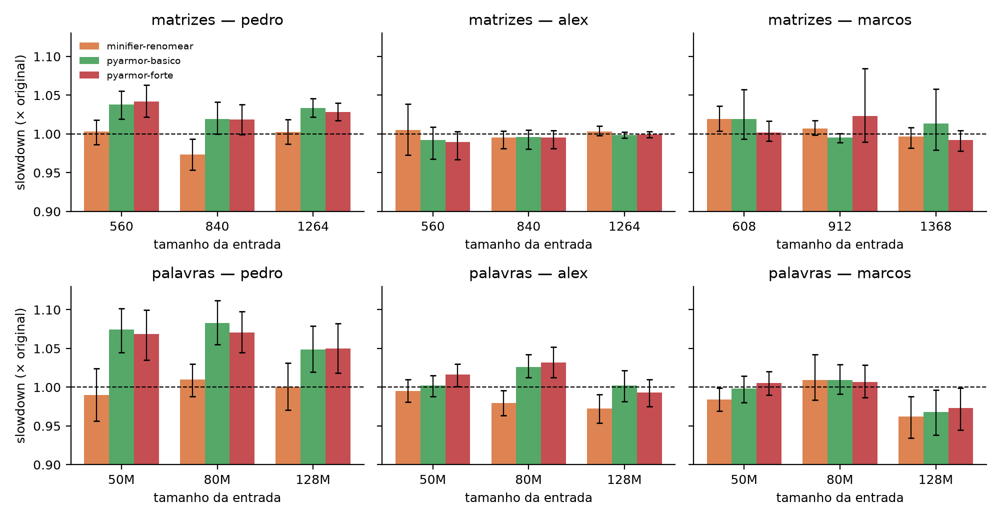

PyArmor e python-minifier em três máquinas
Pedro Machado · Marcos Freitas · Alexsander Santos
Sistemas Operacionais - FURG · Prof. Vinícius Garcia Pinto · Trabalho IV
Ofuscar dificulta a engenharia reversa, mas quanto custa em tempo de execução?
Multiplicação n×n com 3 laços aninhados.
Custo
O(n³), dominado por aritmética.
Contagem de frequência em um dicionário
(dict.get).
Custo médio esperado O(n). Corpus inteiro na RAM.
Benchmarks disponibilizados no AVA, sem alterações. Tempo usado: o
time: X seconds impresso pelo próprio programa.
| configuração | o que faz | comando |
|---|---|---|
| original | baseline, sem ofuscar | - |
| minifier | renomeia identificadores, remove comentários | pyminify --rename-globals |
| pyarmor-básico | criptografa o bytecode; runtime nativo | pyarmor gen |
| pyarmor-forte | o anterior + jit, modo privado, asserções |
pyarmor gen --obf-module 1 --obf-code 1 --enable jit --private --assert-call --assert-import
|
--obf-code 2,
--mix-str, --enable rft|bcc (out of license). O nome “forte” identifica a
combinação adicional testada. --obf-module 1 e --obf-code 1 já são o padrão.
Instalação: pip install -r requirements.txt (pyarmor 9.2.8,
python-minifier 3.4.0). Cada máquina gera o próprio ofuscado/<id>/: o runtime
depende de SO, arquitetura e versão do Python.
| Pedro | Alex | Marcos | |
|---|---|---|---|
| SO | Windows 10 | Ubuntu 26.04 | Fedora 44 |
| CPU | i7-9700 (8c/8t) | Xeon E-2124 (4c/4t) | Ryzen 5 5500 (6c/12t) |
| RAM · Python | 31,9 GiB · 3.12.15 | 30,6 GiB · 3.13.7 | 15,5 GiB · 3.14.10 |
| Energia | alto desempenho | powersave + turbo | powersave |
| Matrizes n | 560 · 840 · 1264 | 560 · 840 · 1264 | 608 · 912 · 1368 |
Todos PCs são desktops; programas fechados, suspensão desativada e máquina sem uso durante a rodada. SO, CPU, Python e perfil mudam juntos: não dá para atribuir diferenças a uma causa só.


Linha tracejada = 1,0 (mesma média do original). Barras de erro = IC 95%. Sem tendência uniforme de aumento com o tamanho. Máximo observado: 1,083×.
| benchmark | máquina | minifier | pyarmor-básico | pyarmor-forte |
|---|---|---|---|---|
| matrizes | Pedro | 1,002 [0,987; 1,019] | 1,033 [1,022; 1,046] | 1,029 [1,017; 1,040] |
| matrizes | Alex | 1,004 [0,998; 1,010] | 0,999 [0,995; 1,002] | 0,999 [0,995; 1,003] |
| matrizes | Marcos | 0,997 [0,982; 1,009] | 1,014 [0,980; 1,058] | 0,992 [0,978; 1,004] |
| palavras | Pedro | 1,001 [0,971; 1,032] | 1,048 [1,020; 1,079] | 1,050 [1,018; 1,082] |
| palavras | Alex | 0,972 [0,954; 0,991] | 1,002 [0,982; 1,022] | 0,993 [0,975; 1,010] |
| palavras | Marcos | 0,962 [0,934; 0,988] | 0,968 [0,938; 0,996] | 0,973 [0,945; 0,999] |
Vermelho: IC não contém 1,0. Há médias acima e abaixo do original. Os intervalos são exploratórios, sem ajuste para várias comparações.
A diferença total − interno não isola o custo de carregar o runtime ou de descriptografar o código.
original (src/matrizes.py)
import sys, time
def matrix_mult(A, B, C, n):
for i in range(n):
for j in range(n):
for k in range(n):
C[i*n+j] += A[i*n+k]*B[k*n+j]
def main():
...
A = [1.0] * (n*n)
C = [0.0] * (n*n)
minifier C=print D=range import sys as B,time as E def I(A,B,C,n): for E in D(n): for F in D(n): for G in D(n):C[E*n+F]+=A[E*n+G]*B[G*n+F] def A(): ... J=[1.]*(A*A);F=[.0]*(A*A)
matrix_mult→I, main→A;
range/print viram apelidos globais; 1.0→1.
matrizes.py vira um stub de 8,7 KB (forte: 15,9 KB) + runtime nativo
de ~640 kB no Pedro--obf-code 2, --mix-str e
--enable rft|bcc
(out of license). Decisão: a config “forte” usa só o que a trial aceita.
tmux.